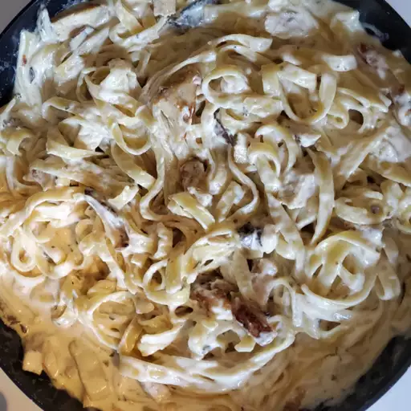

Pasta Alfredo Recipe

Description
A friend of mine got this recipe while traveling in Italy. Chicken, mushrooms, and tortellini in rich cream sauce. Delicious! Serve sprinkled with parsley and cheese.
Ingredients:
- Cheese Tortellini: 1 (16 ounce) package refrigerated cheese tortellini
- Vegetable Oil: 1 tablespoon of any vegetable oil
- Chicken: 4 skinless, boneless chicken breast halves, cubed
- Butter: about 3 tablespoons
- Mushrooms: ½ pound sliced fresh mushrooms
- Garlic powder: 1 pinch garlic powder, or to taste
- Whipping cream: 2 cups heavy whipping cream
- Parmesan: ⅓ cup grated Parmesan cheese
- Parsley: 3 tablespoons chopped fresh parsley
- Salt: 1 teaspoon salt
Steps:
- Bring a large pot of lightly salted water to a boil. Add tortellini. Cook, stirring occasionally, until tortellini float to the top and the filling is hot, about 5 minutes. Drain.
- Heat vegetable oil in a large skillet over medium heat; cook and stir chicken breast in hot oil until no longer pink in the center, about 10 minutes. Remove from heat.
- Melt butter in another skillet over medium heat; cook and stir mushrooms and garlic powder until mushrooms begin to soften, about 3 minutes. Stir heavy cream into mushrooms and bring to a boil. Reduce heat to medium-low and simmer until slightly thickened, about 3 minutes. Add Parmesan cheese, parsley, and salt. Continue to cook until cheese is melted, about 1 minute.
- Stir tortellini and chicken into mushroom-cream sauce. Simmer until heated through, about 2 minutes.